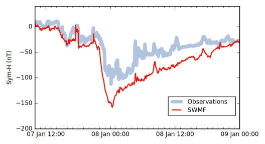
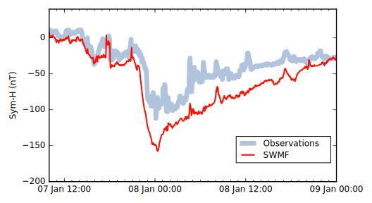
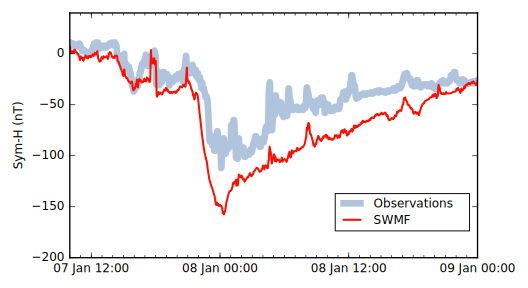

Exploring Magnetotail Structure and Dynamics
with Magnetohydrodynamic Simulations
John Haiducek
Exploring Magnetotail Structure and Dynamics
with Magnetohydrodynamic Simulations
John Haiducek
Sep 6, 2018
Output from a magnetohydrodynamic (MHD) model
Summary
Motivation
Substorms pose hazards to infrastructure
Geomagnetically induced currents
Spacecraft charging
Spacecraft anomalies
Communication outages
No substorm prediction model is currently in use
Motivation
MHD models have been used to study substorms since at least 1981
No MHD model has been validated for substorm prediction
Validating substorm prediction models is complicated by a lack of community consensus about how to identify substorms
Objectives
Develop an improved technique for substorm identification
Test whether MHD can consistently reproduce observed substorms
Solar wind provides energy to the magnetosphere
Walt Feimer, NASA SVS, 2010
Summary
Space Weather Modeling Framework
Summary
Geomagnetic indices estimate magnetospheric current systems
From Stern (1994)
Currents are constantly changing
Currents produce a magnetic field that can be observed from the ground
Geomagnetic indices are computed from ground-based magnetic field measurements
Sym-H index estimates azimuthal current strength
From Stern (1994)
Sym-H
Computed from low-latitude magnetometers
Sensitive to azimuthal currents (ring current, partial ring current, cross-tail current, magnetopause current)
Model does great at predicting Sym-H

Storm-time behavior
Ring current strengthens
Sym-H turns negative
Good Sym-H predictions
Indicate model has realistic ring currents
Important for storm-time accuracy
Model does great at predicting Sym-H
AL index responds to substorm electrojet current
Strongly negative AL is missed
Summary
Substorm validation effort
Can SWMF predict substorms?
Use a “vanilla” SWMF global magnetosphere set-up
Feed a month (January, 2005) of observed solar wind data into it
Look for substorms...
...this last step is complicated by the lack of an agreed-upon method for identifying substorms
Substorm identification
Substorms can be identified in many ways
Plasmoid releases (model)Satellite fields (model+obs.)Ground-based fields (model+obs.)Energetic particles (obs.)Auroral brightening (obs.)
Each method produces false positives and misses
Using all datasets together can improve accuracy...but there is no existing procedure to do this
Plasmoids move tailward
Substorm currents affect magnetic fields
Energetic particles detected by spacecraft
Henderson, 2009
LANL SOPA instrument detects particle fluxes in geosynchronous orbit
Use list from Borovsky (2017)
Auroral brightening
Kavanagh et al., 2007
Substorm onsets observed WIC camera on the IMAGE spacecraft
Use list from Frey et al., 2004 (since updated to include 2005)
Combining signatures
Convolve each onset list with a Gaussian kernel
Add convolved scores together
Identify local maxima that exceed a threshold
Tuning parameters:
Kernel width = 10 min
Threshold = 2.5
Could be different for model and observations
Summary
Combining signatures reduces false positives and data gaps
Skill score measure the model's accuracy
Heidke skill score (HSS)
0=random chance (no skill)
1=perfect forecast
My HSS: 0.11
Observations
Y
N
Model
Y
17
80
N
85
1,306
HSS > 0 (good)...but is it significantly greater than zero?
Also, this was obtained using a particular threshold (2.5) for identifying a substorm in both the model and the observations...do we get positive skill scores for other thresholds?
Model has significant predictive skill
95% confidence interval shows skill is significant
Significance persists when thresholds are varied
Events have characteristic substorm response
Lines show median of onsets
Shading shows interquartile range
Model under-predicts AL strength, over-predicts MPB strength
Model produces realistic waiting times
Conclusions: Identification procedure
New procedure fulfills a community need to move toward multiple-signature identification
Identification procedure shows signs of effectiveness
False identifications are rejected
Data gaps are filled
Onset times exhibit characteristic features of substorms
Conclusions: Model
Substorm prediction with MHD is possible
Statistically significant skill score
Realistic waiting time distribution
Realistic AL and MPB responses
Accurate substorm behavior in the model implies realistic
Reconnection rates
Resisitivity
What's next: Identification procedure
More tests of identification procedure
Randomized data
Additional signatures and time periods
Improvements to identification procedure
Asymmetric kernels to account for time offsets
Non-uniform weights
Variable threshold
What's next: Substorm prediction
Better physics in reconnection region
Reduce dependence on grid resolution
Account for kinetic processes
Uncertainty quantification
Supports interpetation of model output
Data assimilation
Not widely used for magnetosphere
Demonstrated by Godinez et al. (2016)
Reconnection drives plasma flow
Events have characteristic substorm response
Lines show median of onsets
Shading shows interquartile range
Model under-predicts AL strength, over-predicts MPB strength
Isotropic boundary is the result of pitch-angle scattering


 
